There are two ways to interpret a trigonometric polynomial: as a function $\Z\to\C$ defined by $n\mapsto f_n$, or as a function $\R\to\C$ defined by $\theta\mapsto f(\theta)$. Most of Fourier analysis deals with the duality between these two interpretations.
Let us introduce some common language. A trigonometric polynomial is usually called a signal. The indices $n$ are called the frequencies and the coefficient $f_n$ is called the amplitude of $f$ at the frequency $n$. The mapping $n\mapsto\left|f_n\right|^2$ is called the power spectrum of the signal $f$. Building the signal from its amplitudes is called is called synthesis, and extracting the amplitudes from a signal is called analysis.
The monomial $e^{in\theta}$ is called a pure wave of frequency $n$. Thus, synthesis consists in creating a signal as a linear combination of pure waves, and analysis consists in recovering the coefficients of this linear combination. Using this language, we say that harmonic analysis consists in studying the duality between signals $f(\theta)$ and their spectra $f_n$; how do the operations on signals correspond to operations on their spectra, and vice-versa.
Proof. (1) Each monomial $e^{in\theta}$ is $\mathcal{C}^\infty$ and $2\pi$-periodic, and $f$ is a finite linear combination of such monomials, so it is also $\mathcal{C}^\infty$ and $2\pi$-periodic. (2) This is a rewriting of the defintion of $\PP$. (3,4) This result is immediate by linearity of finite sums. (5) The product of two finite sums is still a finite sum. ∎
The point (3) of this proposition is of fundamental importance. In a more general context, it is called the superposition principle. Although it is algebraically trivial, it may be non-intuitive when using the language of signal processing: when computing the sum of two signals, their amplitudes at each frequency add up separately. There can be no destructive interference between different frequencies.
When interpreting a trigonometric polynomial as a $2\pi$-periodic function $\R\to\C$, it helps to plot it as a closed curve in the complex plane. The monomials $e^{in\theta}$ for $n\neq 0$ all correspond to the unit circle traversed $n$ times, clockwise for $n<0$, anticlockwise for $n>0$.
| $e^{-3i\theta}$ | $e^{-2i\theta}$ | $e^{-i\theta}$ | $e^{0i\theta}$ | $e^{i\theta}$ | $e^{2i\theta}$ | $e^{3i\theta}$ |
| 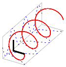 | 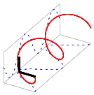 | 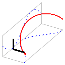 | 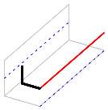 | 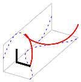 | 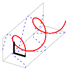 | 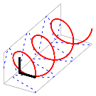 |
| 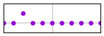 | 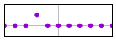 | 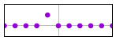 | 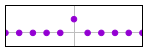 | 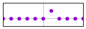 | 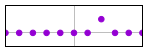 | 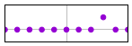 |
Proposition \ref{prp:elementary}(3) explains how to analyze the pointwise sum of two signals. The convolution theorem explains how to analyze their pointwise product:
Proof. The proof is a verification, just as for \ref{prp:elementary}(3), but we write it down fully because it is very important. By definition we have \[ h(\theta)=f(\theta)g(\theta) = \left(\sum_{n\in\Z}f_ne^{in\theta}\right) \left(\sum_{m\in\Z}f_me^{in\theta}\right) \] expanding the product: \[ = \sum_{n\in\Z}\sum_{m\in\Z} f_n g_m e^{i(n+m)\theta} \] change of variable $m=k-n$ \[ =\sum_{n\in\Z}\sum_{k\in\Z} f_n g_{k-n} e^{ik\theta} \] reordering \[ =\sum_{k\in\Z}\left(\sum_{n\in\Z} f_n g_{k-n}\right)e^{ik\theta} \] thus, identifying the coefficients we have that $\ds h_k=\sum_{n\in\Z} f_n g_{k-n}$. ∎
The sequence $h_n=\sum_{k\in\Z} f_k g_{n-k}$ is called the discrete convolution of the sequences $f_n$ and $g_n$. Thus, the first convolution theorem says that the spectrum of a pointwise product is the convolution of the spectra.
The second convolution theorem is the dual version of this statement: the pointwise product of spectra is the spectrum of the convolution. For that, we need to define the convolution of two signals:
Proof. The expression that defines $(f*g)(\theta)$ is an integral of a $C^\infty$ function on a compact domain, so it gives a finite, well-defined number. We can check that $f*g\in\PP$ by computing the integral explicitly: \[ (f*g)(\theta)=\int_0^{2\pi}f(t)g(\theta-t)\ud t = \] ∎
The set $\PP$ of trigonometric polynomials $\PP$ is like the set $\Q$ of rational numbers. They are both easy to define and manipulate, and all the results about them can be proved by finite arguments. However, they have the ugly property of not being complete nor closed under elementary operations. For example, the (pointwise) limit of a sequence of elements of $\PP$ can be a non-smooth, or even a discontinuous function, that does not belong to $\PP$. Even worse, the absolute value $|f|$ of a function $f\in\PP$ is not typically an element of $\PP$. There are several, different completions of the space $\PP$. The most natural completion of $\PP$ is the Hilbert space $L^2([0,2\pi])$, that is obtained using the norm $\|f\|_2$ defined above. We will see that using stricter norms (involving the derivatives of $f$) we obtain completions that are smaller spaces (Sobolev spaces). And we can even obtain larger completions (periodic distributions) by using topologies that do not come from any norm.
A trigonometric polynomial of $N$ coefficients is an expression of the form \[ f(\theta)=\sum_{n=0}^{N-1} f_n e^{in\theta} \] An M-sampling is obtained by evaluating $f$ at the $M$ points $\theta_k=\frac{2\pi k}{M}$. Sampling theory studies the relationship between the vector of coefficients $f_n$ and the vector of samples $f(\theta_k)$, depending on the values of $M$ and $N$.
The ideal case is when $N=M$, or perfect sampling. In that case there are as many coefficients as samples, and there is a linear bijection between them, whose matrix is given by the DFT: \[ f(\theta_k)=\sum_{n=0}^{N-1} f_n e^{\frac{2\pi i k n}{N}} \qquad k=0,\ldots N \] This formula says that the IDFT of the vector $f_n$ is the vector $f(\theta_k)$.
When $M>N$ we have more samples than coefficients. This is called oversampling, or redundant sampling, or zero-padding, depending on the point of view: \[ f(\theta_k)=\sum_{n=0}^{N-1} f_n e^{\frac{2\pi i k n}{M}} +\sum_{n=N}^{M-1} 0\cdot e^{\frac{2\pi i k n}{M}} =\sum_{n=0}^{M-1} zp(f_n) e^{\frac{2\pi i k n}{M}} \] where $zp(f_n)$ is the vector $f_n$ padded by zeros until length $M$. This says that the IDFT of the vector $zp(f_n)$ is the vector $f(\theta_k)$.
When $M<N$ we have less samples than coefficients. This is called undersampling or aliasing. We can still write the samples as the IDFT of a vector involving the coefficients: \[ f(\theta_k) = \sum_{n=0}^{N-1} f_n e^{\frac{2\pi i k n}{M}} = \sum_{n=0}^{N-1} f_n e^{\frac{2\pi i k (n\% M)}{M}} \] where we have performed the euclidean division of $n$ by $M$, that gives $n=qM+(n\% M)$, and the term containing $qM$ disappears because the exponential is $2\pi$-periodic. Now, several indices $n$ may have the same residue modulo $M$, and we can group them: \[ f(\theta_k) = \sum_{n=0}^{M-1}\left(\sum_{(n\%M)=m}f_n\right) e^{\frac{2\pi i k m}{M}} = \sum_{m=0}^{M-1} \mathrm{alias}(f_n) e^{\frac{2\pi i k m}{M}} \] so the samples $f(\theta_k)$ are, as always the IDFT of the coefficients $\mathrm{alias}(f_n)$.
Note: The choice of interval for the indices $n\in\{0,\ldots,N-1\}$ may appear strange, the usual choice being $n\in\left\{-\frac{N}{2},\ldots,\frac{N}{2}-1\right\}$. But we can actually take an arbitrary interval $I_N\subset\Z$, as long as our euclidean residue is defined to be inside: $p\% N\in I_N$. With this notation, the formulas above become
This is a trigonometric polynomial of $N$ coefficients: \[ F(\theta)=\sum_{n\in I_N}f_n e^{in\theta} \]
And those are $M$ samples: \[ \theta_k=\frac{2\pi k}{M} \qquad k=0,\ldots,M \]
Sampling theory studies the relationship between the vectors $(f_n)\in\C^N$ and $(F(\theta_k))\in\C^M$.
The case $M=N$ is called ideal sampling. The relationship is a linear bijection between samples and coefficients that is, by definition, the $\DFT$. \[ F(\theta_k)=\sum_{n\in I_M}f_ne^{\frac{2\pi ink}{M}} \] We have $F(\theta_k) = \IDFT(f_n)$ (this is our definition of $\IDFT$).
$M>N$ oversampling or zero-padding: \[ F(\theta_k) = \sum_{n\in I_N}f_ne^{\frac{2\pi ink}{M}} + \sum_{n\in I_M\setminus I_N} 0\cdot e^{\frac{2\pi ink}{M}} = \sum_{m\in I_M}zp(f)_me^{\frac{2\pi imk}{M}} \] We have $F(\theta_k) = \IDFT(zp(f)_m)$, where \[ zp(f)_m = \begin{cases} f_m & \mathrm{if}\ m\in I_N \\ 0 & \mathrm{if}\ m\in I_M\setminus I_N \\ \end{cases} \]
$M<N$ undersampling or aliasing: \[ F(\theta_k) = \sum_{n\in I_N}f_ne^{\frac{2\pi ink}{M}} = \sum_{n\in I_N}f_ne^{\frac{2\pi i(n\% M)k}{M}} = \sum_{m\in I_M}\left(\sum_{(n\%M)=m}f_n\right)e^{\frac{2\pi imk}{M}} \] We still have $F(\theta_k)=\IDFT(alias(f)_m)$, where \[ alias(f)_m=\sum_{(n\ \mathrm{mod}_I\ M)=m} f_n \]